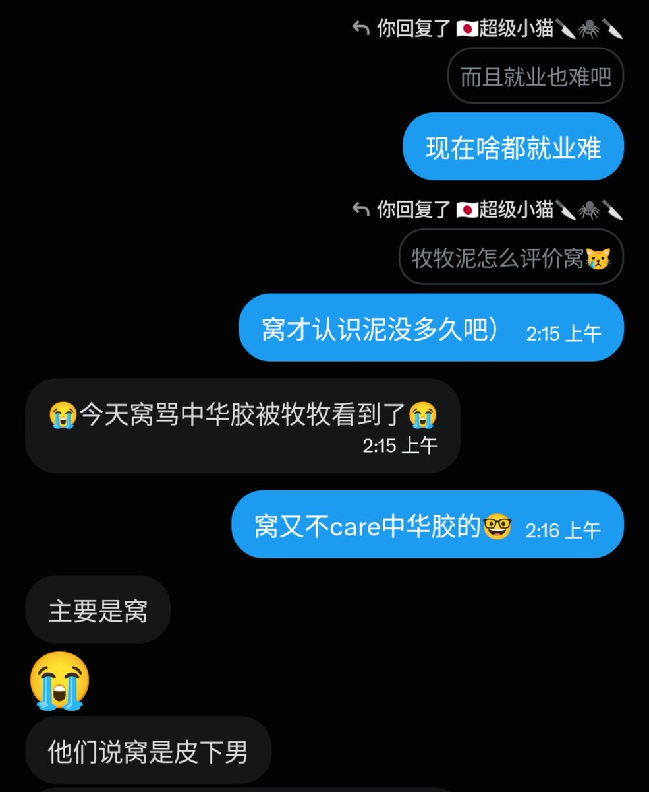

🍊苦橙🍊8️⃣9️⃣6️⃣4️⃣
@Citrus_amara
还有岁月史书
虽然他做过很多坏事，但其实他算我开始OD后熟悉的最开始的几个人之一。

琵琶牧々
@anblk984
全 剧 终
窝认识OD狂猫大概是24年11月，那会儿窝也大概才五六千的粉丝，当时他人设是纯支黑美少女，玩推不到一年开始OD割手紫砂，不到两年就速通人生了，不得不说窝的内容比起推上的各种小圈子不良诱惑来说还是太纯良了顶多教你骚扰下良家妇女落井下石一下灾民 https://t.co/iD6ffipcSl https://t.co/W3ThZRjSyG